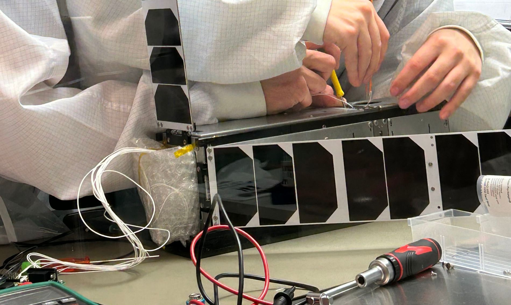
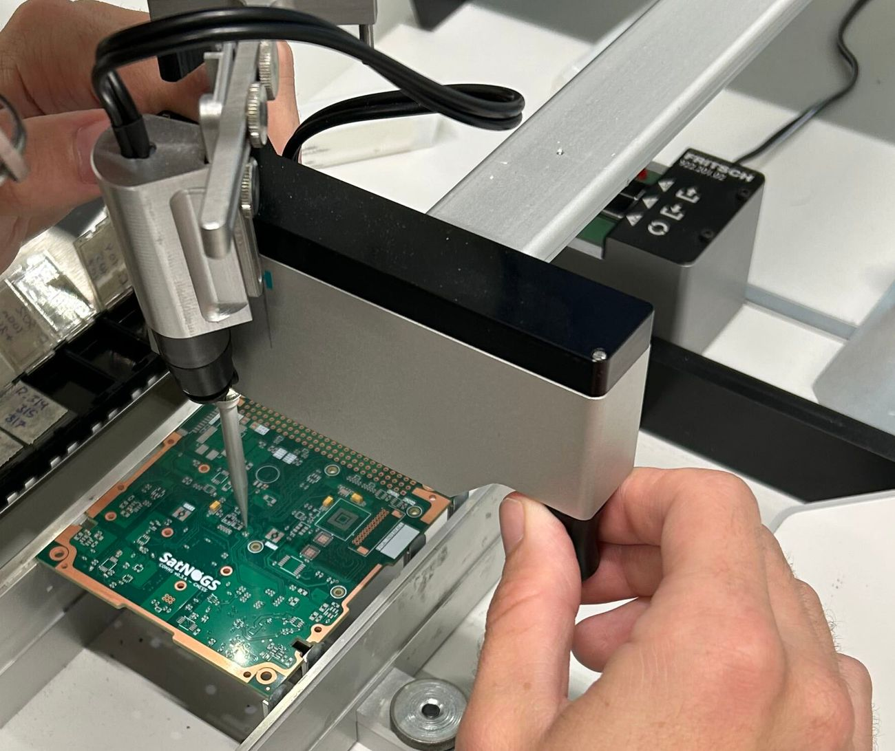
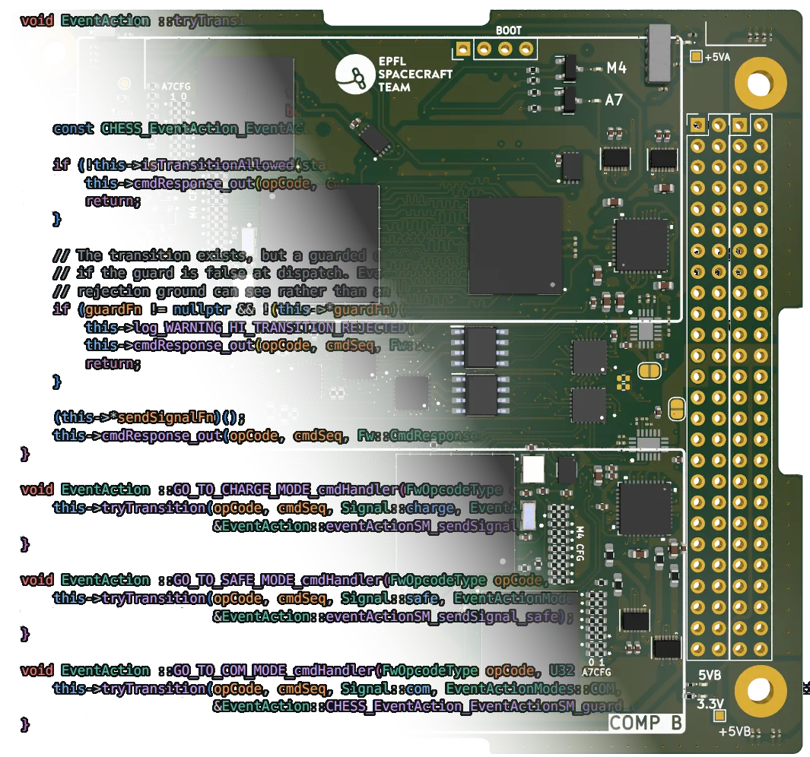

A space programme run by students
We are a student-led association at EPFL. Our teams mirror a real space programme: mission design, flight software, electronics, mechanics, the ground segment, communications and sponsoring.
Members learn by doing what the job requires: link budgets, modulation and antennas, embedded software, structural and vibration analysis, and running satellite operations.
What makes it hard is that our hardware has to be qualified like any other spacecraft before it can fly, while the people building it join and leave with the academic calendar. Handing work over cleanly is as much part of the engineering as the hardware itself.
Who builds it
About 105 members from across EPFL
- 21Mechanical Engineering
- 20Electrical and Electronic Engineering
- 16Computer and Communication Sciences
- 12Robotics
- 9Microengineering
- 6Physics
- 5Communication Systems
- 16Other sections, incl. Computer Science, Mathematics, Chemistry, Computational and Quantum Science
Approximate head counts, Fall 2026.
From one board in orbit to our own CubeSat
-
2020
The association is founded
EPFL Spacecraft Team starts as a student-led association.
-
2023
Bunny OBC
Our first in-orbit demonstration: the Bunny on-board computer.
Watch the Bunny OBC video (opens YouTube) -
2025
Twocan OBC
Our second in-orbit demonstration. If one computer can't, Twocan.
-
Q4 2027
CHESS Pathfinder 0
Our first 3U CubeSat, on a launch we won through the IAF SUCC competition.
About the mission
Hardware and software we build ourselves
We design, assemble and test the subsystems of the satellites and the ground segment station.



CHESS Pathfinder 0
Having won a free launch opportunity through the IAF SUCC competition, we will launch CP-0, our first 3U CubeSat, as a platform demonstrator.
-
De-risk the constellation
Prove in orbit the platform, the communications system and the ground segment.
-
Collaborate with Swiss stakeholders
Our satellite will fly a GNSS from ETH Zurich and a SPAD camera from NovoViz. We also work with the University of Bern for the testing phase.
-
Support the Dark and Quiet Skies initiative
Perform electromagnetic calibration measurements in support of astronomers and the Dark and Quiet Skies initiative.

Watch this video to learn more about the team and CHESS Pathfinder 0. Watch on YouTube
Listen to CP-0 from your own station
Our UHF ground station is part of the SatNOGS network. We plan open telemetry and a set of public telecommands for licensed radio amateurs.